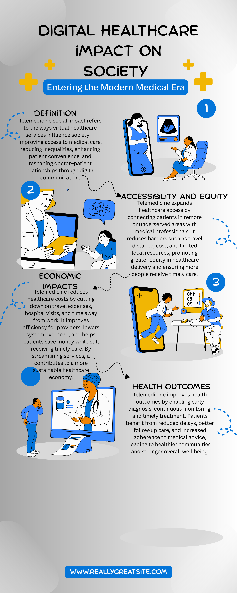

Digital Healthcare:
Transforming Society
Telemedicine and virtual healthcare are revolutionizing how modern medical services are delivered. By bridging geographical divides, slashing logistical expenses, and facilitating continuous diagnostic monitoring, digital health is fostering an inclusive, efficient, and resilient society.

Digital Healthcare Services: The 4 Core Pillars
Explore the fundamental ways virtual healthcare services influence society — improving medical access, reducing inequalities, saving costs, and elevating clinical outcomes.

Definition & Scope
Telemedicine social impact refers to the ways virtual healthcare services influence society — improving access to medical care, reducing inequalities, enhancing patient convenience, and reshaping doctor–patient relationships through digital communication.
Accessibility & Equity
Telemedicine expands healthcare access by connecting patients in remote or underserved areas with medical professionals. It reduces barriers such as travel distance, cost, and limited local resources, promoting greater equity in healthcare delivery.
Explore Accessibility & Equity →Economic Impacts
Telemedicine reduces healthcare costs by cutting down on travel expenses, hospital visits, and time away from work. It improves efficiency for providers, lowers system overhead, and contributes to a more sustainable healthcare economy.
Explore Economic Impacts →Health Outcomes
Telemedicine improves health outcomes by enabling early diagnosis, continuous monitoring, and timely treatment. Patients benefit from reduced delays, better follow-up care, and increased adherence to medical advice.
Explore Health Outcomes →Connecting Patients, Doctors, and Communities Globally
Traditional healthcare delivery models often required patients to endure long commutes, take unpaid leave from work, and wait weeks for specialist consultations. Virtual medicine transforms this paradigm into continuous, proactive, and equitable care.
- Overcomes Geographic Barriers: Rural communities access world-class university specialists without traveling hundreds of miles.
- Reduces Financial Burden: Eliminates transit, parking, and childcare fees for vulnerable working families.
- Continuous Diagnostic Loop: Remote monitors and telemetry provide doctors with real-time biometric indicators.